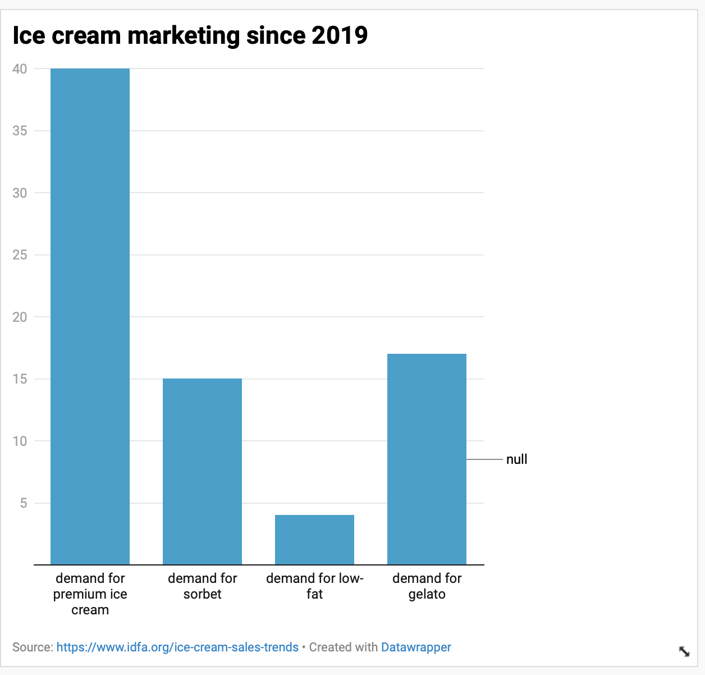
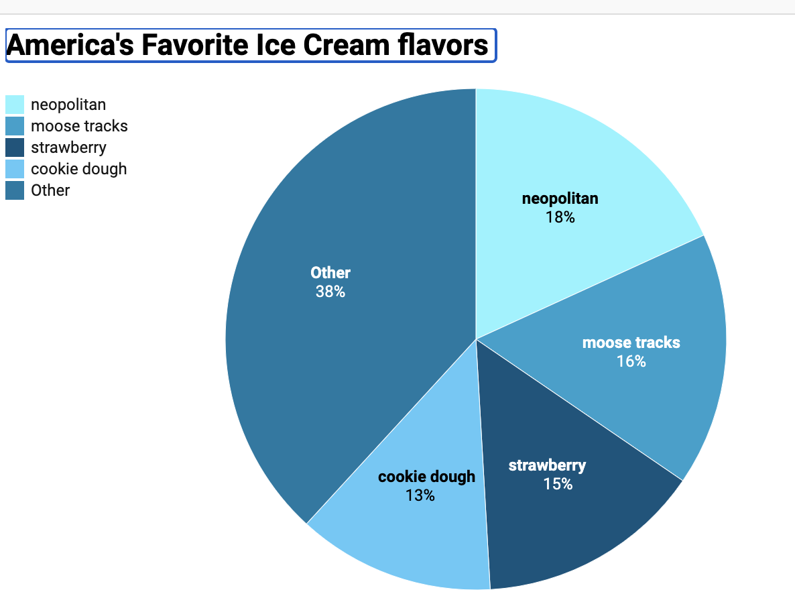

what is "nicecream"
- created by umd grads in 2017
- uses liquid nitrogen to make ice cream
- located in Arlington, VA
how it's made
- mix an ice cream base
- pour in liquid nitrogen
- watch the compressed air freeze and thicken the base

An ice cream shop started by two James Madison University students uses liquid nitrogen to create its desserts. According to their website, Nicecream was “started in a small home kitchen, as two food lovers' weekend project.” The site explains that Gil Welsford and Sandra Tran were a college couple who enjoyed trying new recipes. “One Saturday morning, they decided to take Sandra's ice cream recipes to the next level by freezing her creations with liquid nitrogen,” the website reads, “captivated by the process and the quality of ice cream coming out of their experiment, they forged on.” The website explains that the couple used their savings to open the first Nicecream location in Arlington, Virginia in 2014. link to website
Before this, the site mentions that they tested the success of their product by taking it tk farmer’s markets in D.C.. “Nicecream earned recognition from CNN, US News and World Reports, Food and Wine, as well as many local publications,” the website reads, “since then, Nicecream has grown to four ice cream shops.” The other shops are located in Arlington, D.C. and Alexandria. According to the website, “remaining a locally owned and female operated company, Nicecream has stayed true to its values of fresh, ethically raised milk and produce while they continue to spread their passion for freshly crafted ice cream throughout DC.” Nicecream is listed as one of the top 10 nitrogen ice cream shops in D.C., according to Yelp. The shop scored 4 stars and 519 reviews.
The International Data Foods organization did a recent study which proved that ice cream is a popular and high-demand treat in America. IDFA collected data showing that 6.4 billion pounds of ice cream and frozen yogurt were produced in the U.S. in 2019, and in 2020 American ice cream makers churned out more than one billion gallons of the sweet treat. The study showed that, “the ice cream industry has a $13.1 billion impact on the U.S. economy, supports 28,800 direct jobs, and generates $1.8 billion in direct wages,” as stated on the IDFA website.
Philip Sokolowski, Executive Chef and General Manager at Libations Tavern, in Maryland, has been a chef for 34 years and has been making desserts for 30 years. He said he thinks Nicecream could help accommodate the high demand for ice cream, because of its unique recipe.
“I think the concept is great and really trendy,” Sokolowski said, “it gives people a good product and a good show.” The chef said although using liquid nitrogen in the kitchen can be dangerous, it makes desserts creamier because of how fast the molecules freeze. According to the IDFA data report, “Fortune Business Insights estimates the global ice cream market will reach $91.9 billion in 2027, up from $70.9 billion in 2019.” This would be a 30 percent increase in less than a decade.

 how it's made
how it's made